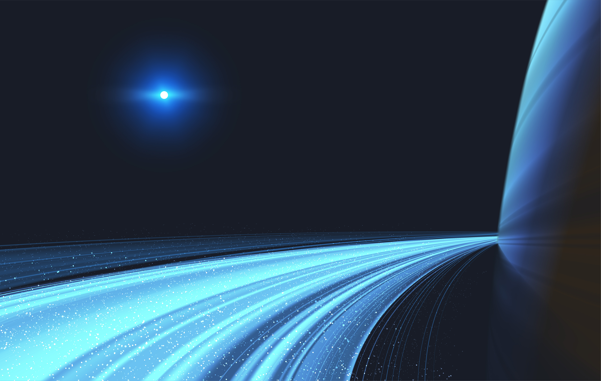

"Nós somos feitos de poeira de estrelas." - Carl Sagan

O espaço é um vasto e misterioso domínio que se estende além da atmosfera da Terra, abrigando planetas, estrelas,
galáxias e buracos negros. Desde os tempos antigos, a observação dos corpos celestes despertou a curiosidade humana,
levando ao desenvolvimento de tecnologias como telescópios e sondas espaciais.
Fenômenos como a formação de estrelas e a expansão do universo, descoberta com a teoria do Big Bang, revelam a complexidade do cosmos.
A teoria da relatividade de Einstein mostrou que espaço e tempo estão interligados, desafiando nossa compreensão.
Além de seu valor científico, o espaço inspira a imaginação, simbolizado por missões como a Apollo 11, que levou humanos à Lua.
O espaço é um cenário fascinante que nos convida a explorar e entender as leis fundamentais do universo.